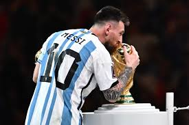

the best soccers player the world in 2024
De acordo com as pesquisas realizadas pela federação VianaEC, o ranking dos melhores jogadores de 2024 ate o mes de março do dia 12 foi representado
pelos tais jogadores a baixo :


1- Neymar
2- messi
3- Ribamar
4- kylian Mbappe
5- roger guedes
6- carlos miguel
7- murilo santiago
concordam?
Neymar
ney mito
Ribamar
ribamar
PARA VER TODOS OS ARQUIVOS
Acesse o GitHub para aprender na prática como criar o seu site